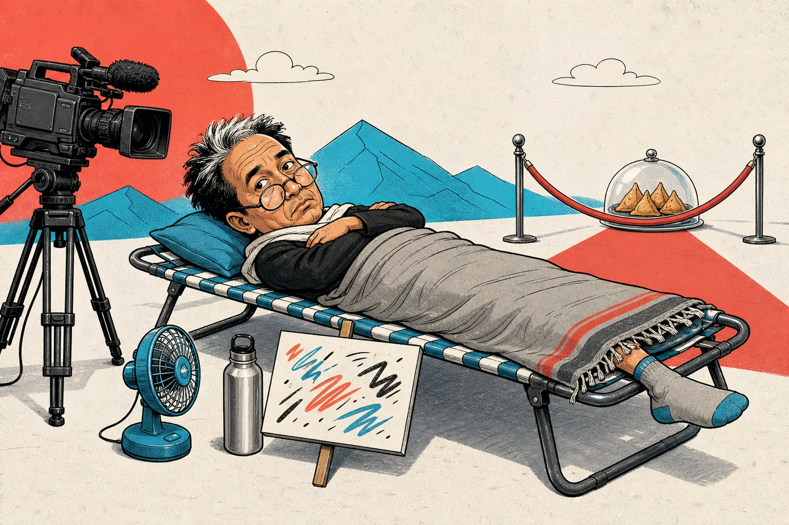

MANUALLY CHECKED · 16 JUL 2026
IS SONAM WANGCHUK DEAD YET?
NO.
ALIVE
AND STILL
ON CAMERA
AND STILL
ON CAMERA
The engineer-activist has apparently discovered a renewable resource more dependable than solar power: public attention.
A source-backed critique of a camera-ready hunger strike that converts self-denial into political leverage.
Imaginary samosas delivered this visit: 0.


गिरफ़्तारी फ़ाइल
अभिजीत दिपके 125वीं बार गिरफ़्तार होने की कोशिश कर चुका था—लेकिन पुलिस ने उसे माता‑पिता से बिछड़ा छोटा बच्चा समझ लिया।
125
गिरफ़्तार होने की कोशिशें125वीं बार भी नाम पूछा गया
पुलिस: “बेटा, तुम्हारा नाम क्या है? तुम्हारे मम्मी-पापा कहाँ हैं?”
BOTTOM LINE
The evidence question
Is the fast fake?
Our editorial suspicion: probably—but it is not medically proven.
The reporting linked here provides no independently published ketone result. Blood pressure, glucose and weight loss are nonspecific; none establishes continuous fasting.
Blood beta-hydroxybutyrate (BHB) or urinary ketones would document ketosis more directly, but even ketosis can follow carbohydrate restriction or exogenous ketones, so it would support—not prove—a water-only fast.
Medical sources 06–08 ↓
REALITY RECEIPTS
Eight checked links
Last checked .
Open source ledger 8 links ↓
01Fast begins at Jantar MantarPTI via Rediff · 28 Jun 2026↗
02BBC reports 8.2 kg weight lossBBC News · after 16 days↗
03Why Wangchuk is protestingFrontline · 15 Jul 2026↗
04Day 18 and 24-hour medical vigilanceThe Hindu / PTI · 15 Jul 2026↗
05Wangchuk’s own strike update@Wangchuk66 on X↗
06Prolonged-fasting review: ketones, glucose and blood pressureNutrition Reviews · human-trial review↗
07Long-term fasting ketosis in 1,610 subjectsNutrients · blood and urine ketone measurements↗
08What blood and urine ketone tests actually showDiabetes Technology & Therapeutics · measurement review↗